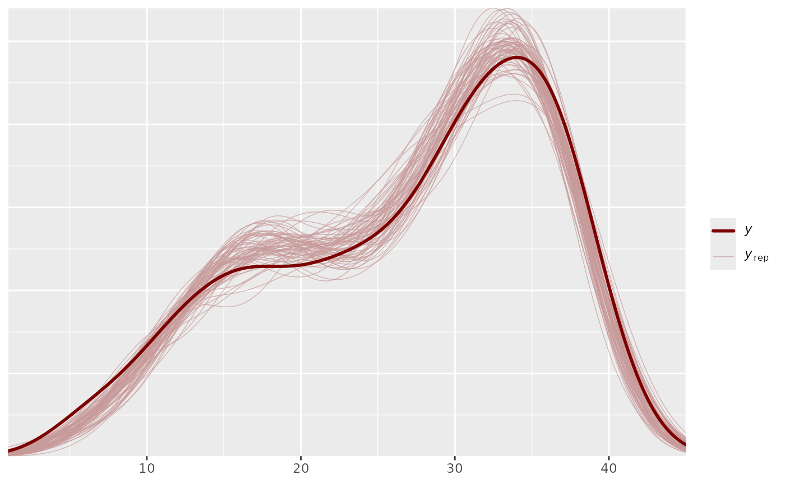
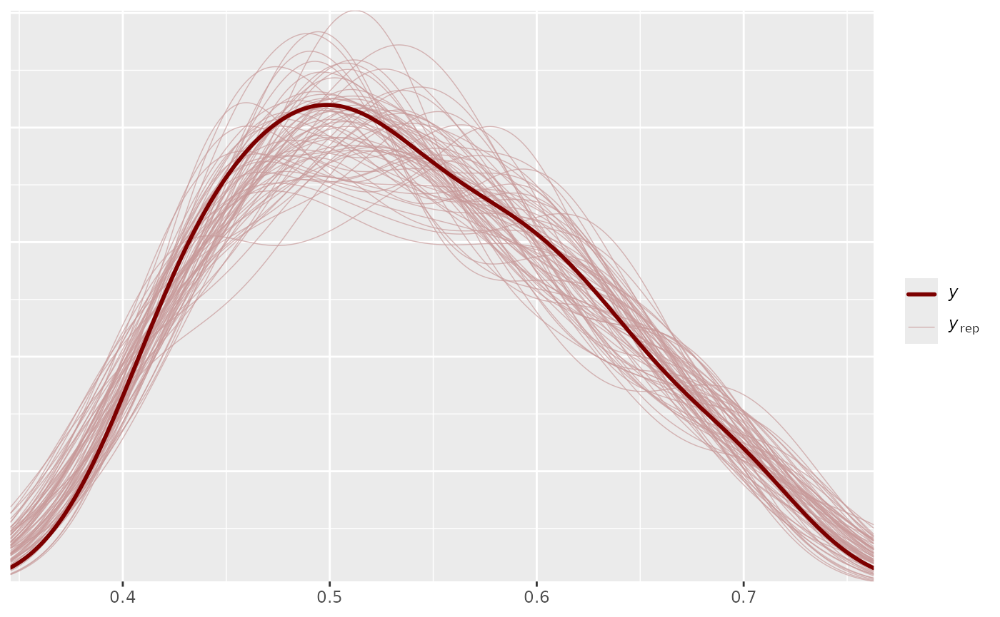
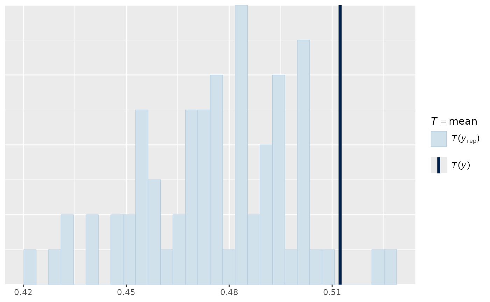
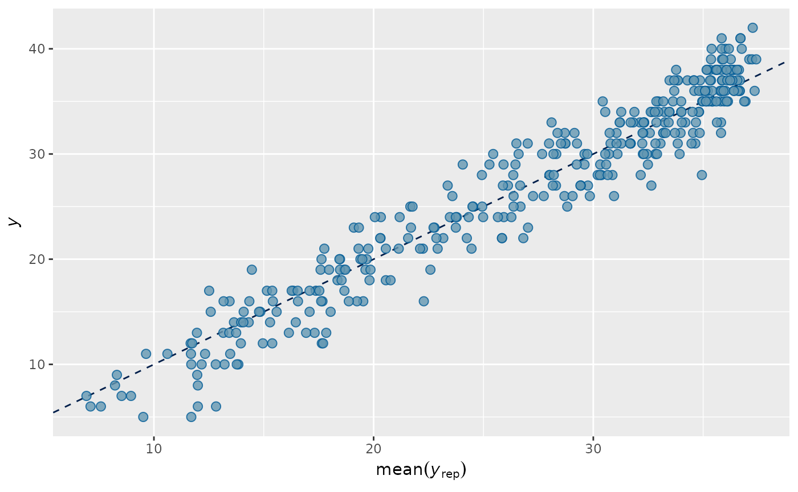
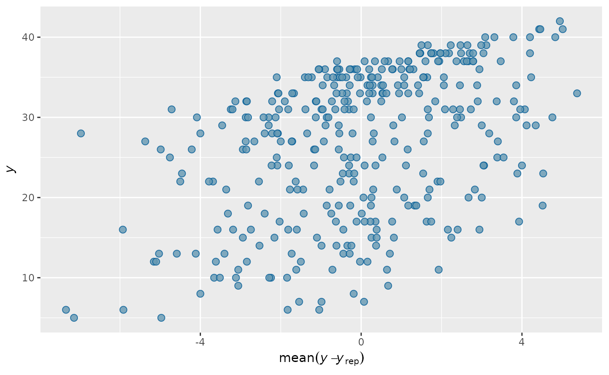

(1) Simulate responses based on the HMDCM model
class_0 <- sample(1:2^K, N, replace = L)
Alphas_0 <- matrix(0,N,K)
for(i in 1:N){
Alphas_0[i,] <- inv_bijectionvector(K,(class_0[i]-1))
}
thetas_true = rnorm(N)
lambdas_true = c(-1, 1.8, .277, .055)
Alphas <- sim_alphas(model="HO_sep",
lambdas=lambdas_true,
thetas=thetas_true,
Q_matrix=Q_matrix,
Design_array=Design_array)
table(rowSums(Alphas[,,5]) - rowSums(Alphas[,,1])) # used to see how much transition has taken place
#>
#> 0 1 2 3 4
#> 32 39 91 148 40
itempars_true <- matrix(runif(J*2,.1,.2), ncol=2)
Y_sim <- sim_hmcdm(model="DINA",Alphas,Q_matrix,Design_array,
itempars=itempars_true)(2) Run the MCMC to sample parameters from the posterior distribution
output_HMDCM = hmcdm(Y_sim,Q_matrix,"DINA_HO",Test_order = Test_order, Test_versions = Test_versions,
chain_length=100,burn_in=30,
theta_propose = 2,deltas_propose = c(.45,.35,.25,.06))
#> 0
output_HMDCM = hmcdm(Y_sim,Q_matrix,"DINA_HO",Design_array,
chain_length=100,burn_in=30,
theta_propose = 2,deltas_propose = c(.45,.35,.25,.06))
#> 0
output_HMDCM
#>
#> Model: DINA_HO
#>
#> Sample Size: 350
#> Number of Items:
#> Number of Time Points:
#>
#> Chain Length: 100, burn-in: 30
summary(output_HMDCM)
#>
#> Model: DINA_HO
#>
#> Item Parameters:
#> ss_EAP gs_EAP
#> 0.10616 0.17218
#> 0.19930 0.21124
#> 0.18967 0.07554
#> 0.17659 0.11189
#> 0.08627 0.19948
#> ... 45 more items
#>
#> Transition Parameters:
#> lambdas_EAP
#> λ0 -1.4421
#> λ1 2.2913
#> λ2 0.2320
#> λ3 0.1351
#>
#> Class Probabilities:
#> pis_EAP
#> 0000 0.1193
#> 0001 0.2031
#> 0010 0.1514
#> 0011 0.2501
#> 0100 0.1929
#> ... 11 more classes
#>
#> Deviance Information Criterion (DIC): 19253.88
#>
#> Posterior Predictive P-value (PPP):
#> M1: 0.5183
#> M2: 0.49
#> total scores: 0.6261
a <- summary(output_HMDCM)
a$ss_EAP
#> [,1]
#> [1,] 0.10615919
#> [2,] 0.19929923
#> [3,] 0.18966654
#> [4,] 0.17659011
#> [5,] 0.08626741
#> [6,] 0.19789100
#> [7,] 0.29257005
#> [8,] 0.09891657
#> [9,] 0.12440446
#> [10,] 0.17982255
#> [11,] 0.20226300
#> [12,] 0.09331987
#> [13,] 0.15013335
#> [14,] 0.15480195
#> [15,] 0.19486381
#> [16,] 0.11160632
#> [17,] 0.14693245
#> [18,] 0.20293314
#> [19,] 0.23267720
#> [20,] 0.13592873
#> [21,] 0.12072300
#> [22,] 0.23408736
#> [23,] 0.20256629
#> [24,] 0.21685779
#> [25,] 0.14520822
#> [26,] 0.15253920
#> [27,] 0.16210757
#> [28,] 0.11676346
#> [29,] 0.18557416
#> [30,] 0.06841515
#> [31,] 0.22156845
#> [32,] 0.20836574
#> [33,] 0.12808578
#> [34,] 0.13480140
#> [35,] 0.12390224
#> [36,] 0.18369196
#> [37,] 0.12626761
#> [38,] 0.19195494
#> [39,] 0.16732090
#> [40,] 0.23294189
#> [41,] 0.25612740
#> [42,] 0.19674031
#> [43,] 0.16206080
#> [44,] 0.19112762
#> [45,] 0.15248900
#> [46,] 0.18279610
#> [47,] 0.17563054
#> [48,] 0.17902121
#> [49,] 0.19005740
#> [50,] 0.13400072
a$lambdas_EAP
#> [,1]
#> λ0 -1.4421195
#> λ1 2.2913274
#> λ2 0.2319742
#> λ3 0.1351346
mean(a$PPP_total_scores)
#> [1] 0.6236163
mean(upper.tri(a$PPP_item_ORs))
#> [1] 0.49
mean(a$PPP_item_means)
#> [1] 0.5154286(3) Evaluate the accuracy of estimated parameters
(4) Evaluate the fit of the model to the observed response
a$DIC
#> Transition Response_Time Response Joint Total
#> D_bar 1990.652 NA 15159.39 1257.558 18407.60
#> D(theta_bar) 1707.921 NA 14634.67 1218.733 17561.32
#> DIC 2273.382 NA 15684.12 1296.383 19253.88
head(a$PPP_total_scores)
#> [,1] [,2] [,3] [,4] [,5]
#> [1,] 0.8142857 0.3000000 0.5714286 0.85714286 0.64285714
#> [2,] 0.7285714 0.6714286 0.9000000 0.28571429 0.50000000
#> [3,] 0.4714286 0.8714286 0.8857143 0.90000000 0.72857143
#> [4,] 0.6428571 0.5857143 0.8285714 0.51428571 0.05714286
#> [5,] 0.8428571 0.8428571 0.6714286 0.01428571 0.10000000
#> [6,] 0.7428571 0.4285714 1.0000000 0.25714286 0.87142857
head(a$PPP_item_means)
#> [1] 0.5714286 0.5000000 0.4714286 0.4571429 0.5142857 0.5285714
head(a$PPP_item_ORs)
#> [,1] [,2] [,3] [,4] [,5] [,6] [,7] [,8]
#> [1,] NA 0.9428571 0.9285714 0.2000000 0.3714286 0.4000000 0.4714286 0.7142857
#> [2,] NA NA 0.6857143 0.3857143 0.3285714 0.3285714 0.1571429 0.6571429
#> [3,] NA NA NA 0.2857143 0.5857143 0.5428571 0.8571429 0.6857143
#> [4,] NA NA NA NA 0.2142857 0.5142857 0.8000000 0.8714286
#> [5,] NA NA NA NA NA 0.3714286 0.5000000 0.4857143
#> [6,] NA NA NA NA NA NA 0.5857143 0.9285714
#> [,9] [,10] [,11] [,12] [,13] [,14] [,15]
#> [1,] 0.5714286 0.9000000 0.9285714 0.8714286 0.6571429 0.8857143 0.8571429
#> [2,] 0.2571429 0.6857143 0.5714286 0.5714286 0.2428571 0.8714286 0.3857143
#> [3,] 0.3000000 0.9857143 0.2285714 0.4857143 0.6571429 0.5857143 0.9714286
#> [4,] 0.8428571 0.5000000 0.8857143 0.9571429 0.8285714 0.2000000 0.6428571
#> [5,] 0.2714286 0.6571429 0.9857143 0.6142857 0.9428571 0.6428571 0.8428571
#> [6,] 0.6571429 0.7000000 0.8714286 0.4285714 0.8285714 0.6000000 0.4142857
#> [,16] [,17] [,18] [,19] [,20] [,21] [,22]
#> [1,] 0.7142857 0.1285714 0.1571429 0.8000000 0.5285714 0.4714286 0.7000000
#> [2,] 0.4142857 0.4000000 0.5142857 0.8714286 0.8571429 0.6428571 0.5428571
#> [3,] 0.6285714 0.2857143 0.0000000 0.9285714 0.4000000 0.7142857 0.2285714
#> [4,] 0.3857143 0.9142857 0.3000000 1.0000000 0.8142857 0.3857143 0.8857143
#> [5,] 0.7571429 0.4428571 0.8857143 0.8857143 0.8285714 0.2714286 0.4142857
#> [6,] 0.2285714 0.5142857 0.7142857 1.0000000 0.8285714 0.6428571 0.9714286
#> [,23] [,24] [,25] [,26] [,27] [,28] [,29]
#> [1,] 0.4000000 0.20000000 0.8285714 0.4857143 0.9428571 0.45714286 0.80000000
#> [2,] 0.9428571 0.11428571 0.1571429 0.2000000 0.5000000 0.55714286 0.92857143
#> [3,] 0.4571429 0.05714286 0.4285714 0.7571429 0.7428571 0.41428571 0.28571429
#> [4,] 0.4285714 0.50000000 0.2428571 0.1285714 0.5142857 0.17142857 0.08571429
#> [5,] 0.8714286 0.54285714 0.6285714 0.5857143 0.7857143 0.07142857 0.24285714
#> [6,] 0.9857143 0.80000000 1.0000000 0.6285714 0.9857143 0.94285714 0.94285714
#> [,30] [,31] [,32] [,33] [,34] [,35] [,36]
#> [1,] 0.2285714 0.2000000 0.2000000 0.04285714 0.5428571 0.18571429 0.65714286
#> [2,] 0.1714286 0.4714286 0.6142857 0.20000000 0.7285714 0.04285714 0.21428571
#> [3,] 0.1714286 0.6571429 0.7714286 0.20000000 0.5000000 0.41428571 0.87142857
#> [4,] 0.2000000 0.0000000 0.8285714 0.10000000 0.2000000 0.14285714 0.01428571
#> [5,] 0.4857143 0.6000000 0.8857143 0.55714286 0.5857143 0.42857143 0.87142857
#> [6,] 0.5428571 0.5000000 0.9857143 0.72857143 0.7714286 0.64285714 0.51428571
#> [,37] [,38] [,39] [,40] [,41] [,42] [,43]
#> [1,] 0.32857143 0.8000000 0.7428571 0.01428571 0.8571429 0.10000000 0.77142857
#> [2,] 0.04285714 0.8285714 0.2714286 0.05714286 0.7857143 0.08571429 0.37142857
#> [3,] 0.42857143 0.9285714 0.7142857 0.42857143 0.3428571 0.08571429 0.18571429
#> [4,] 0.38571429 0.1857143 0.5142857 0.00000000 0.7000000 0.67142857 0.07142857
#> [5,] 0.84285714 0.4428571 0.8714286 0.44285714 1.0000000 0.30000000 0.52857143
#> [6,] 0.31428571 0.3428571 0.7714286 0.22857143 1.0000000 0.32857143 0.27142857
#> [,44] [,45] [,46] [,47] [,48] [,49] [,50]
#> [1,] 0.4714286 0.61428571 0.27142857 0.08571429 0.5714286 0.32857143 0.1142857
#> [2,] 0.7571429 0.70000000 0.08571429 0.04285714 0.2285714 0.21428571 0.3142857
#> [3,] 0.3000000 0.75714286 0.32857143 0.24285714 0.7285714 0.05714286 0.4857143
#> [4,] 0.8571429 0.02857143 0.10000000 0.42857143 0.7285714 0.07142857 0.5571429
#> [5,] 0.1714286 0.62857143 0.81428571 0.32857143 0.3142857 0.18571429 0.7714286
#> [6,] 0.9000000 0.05714286 0.85714286 0.50000000 0.6142857 0.82857143 0.4142857
library(bayesplot)
#> This is bayesplot version 1.10.0
#> - Online documentation and vignettes at mc-stan.org/bayesplot
#> - bayesplot theme set to bayesplot::theme_default()
#> * Does _not_ affect other ggplot2 plots
#> * See ?bayesplot_theme_set for details on theme setting
pp_check(output_HMDCM)
pp_check(output_HMDCM, plotfun="dens_overlay", type="item_mean")
pp_check(output_HMDCM, plotfun="hist", type="item_OR")
#> `stat_bin()` using `bins = 30`. Pick better value with `binwidth`.
pp_check(output_HMDCM, plotfun="stat_2d", type="item_mean")
pp_check(output_HMDCM, plotfun="scatter_avg", type="total_score")
pp_check(output_HMDCM, plotfun="error_scatter_avg", type="total_score")
Convergence checking
Checking convergence of the two independent MCMC chains with
different initial values using coda package.
# output_HMDCM1 = hmcdm(Y_sim, Q_matrix, "DINA_HO", Design_array,
# chain_length=100, burn_in=30,
# theta_propose = 2, deltas_propose = c(.45,.35,.25,.06))
# output_HMDCM2 = hmcdm(Y_sim, Q_matrix, "DINA_HO", Design_array,
# chain_length=100, burn_in=30,
# theta_propose = 2, deltas_propose = c(.45,.35,.25,.06))
#
# library(coda)
#
# x <- mcmc.list(mcmc(t(rbind(output_HMDCM1$ss, output_HMDCM1$gs, output_HMDCM1$lambdas))),
# mcmc(t(rbind(output_HMDCM2$ss, output_HMDCM2$gs, output_HMDCM2$lambdas))))
#
# gelman.diag(x, autoburnin=F)